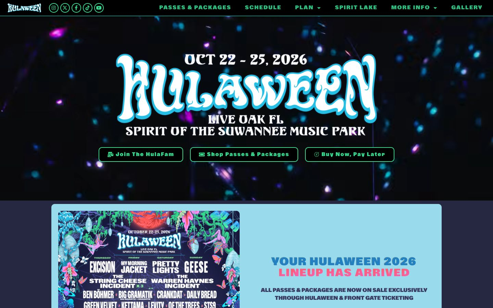

References / Website / 345
Suwannee Hulaween festival website
A Florida festival site whose hero wordmark uses melting, swollen letters with a cyan echo outline over a dark, glittering photo.
- Source
- hulaween.com
- Creator
- Suwannee Hulaween
- Style
- Psychedelic art (agent-proposed, not yet reviewed by a person)
- Moods
- Hallucinatory, nocturnal, festive
- Evidence
- Captured with
tools/capture.mjs(headless Chrome, 1440 × 900) on 28 September 2026 and inspected. The screenshot shows the first viewport; the measurement covers up to four screens. - Reviewed
- Rights
- Third-party work, stored with credit for commentary. License: unverified. Rights policy
Observed
- The hero is a dark photograph of out-of-focus magenta and cyan points of light.
- HULAWEEN is centered in very large white letters that swell and taper, with blobby terminals and a cyan echo outline.
- The dates above and LIVE OAK FL and SPIRIT OF THE SUWANNEE MUSIC PARK below are in a white serif with soft, flared shapes.
- Three outlined buttons in green sit below, in a wide sans.
- A light-blue panel below holds a lineup poster: dense jungle plants, flowers, and figures in green, pink, and blue around the same lettering, with band names in condensed capitals.
- The navigation bar is black with spaced green capitals.
Why it belongs
The page keeps the style in its display lettering and in the poster image, and uses a conventional dark festival interface for everything else.
Measured values: color.chromaticShare 0.34 fails because the photo ground is dark; color.hues 5 and type.centerShare 0.93 pass; color.patternShare is 0.
Borrow
Give swollen white display letters a single cyan outline to lift them from a dark ground.
Pair a psychedelic wordmark with a soft, flared serif for secondary lines.
Measured
Machine-extracted by tools/extract-traits.js on . Full measurement.
- Type families
- ABC Gravity Upright Variable (68%), Archivo Narrow (18%), Poppins (13%)
- Type scale ratio
- 1.22
- Median radius
- 0 px
- Mean chroma
- 0.26
- Palette
- #252840 40%
- #99dbec 17%
- #16024a 13%
- #25bee7 7%
- #000000 5%
- #ffffff 4%
- #ff60c6 4%
- #ff9459 3%

